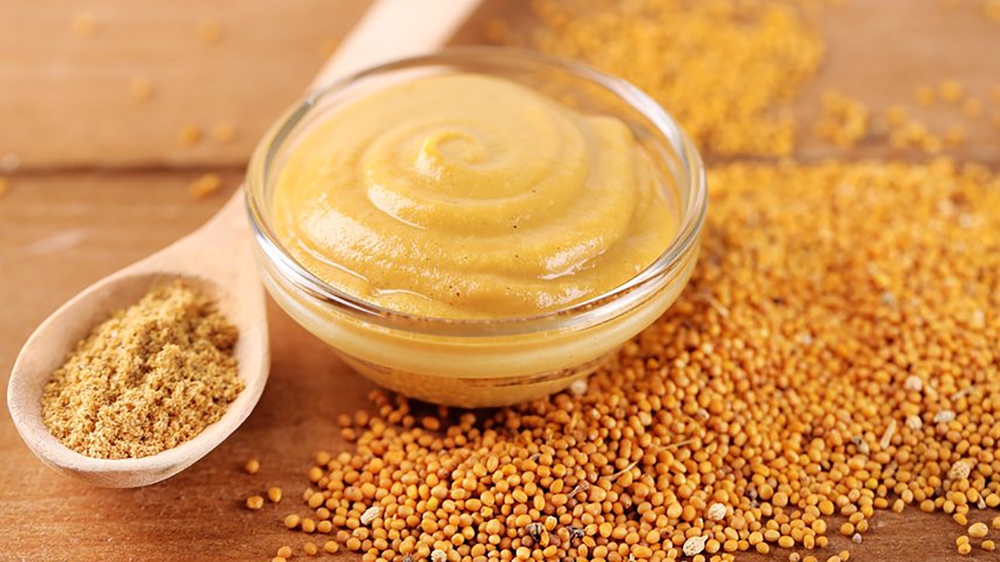
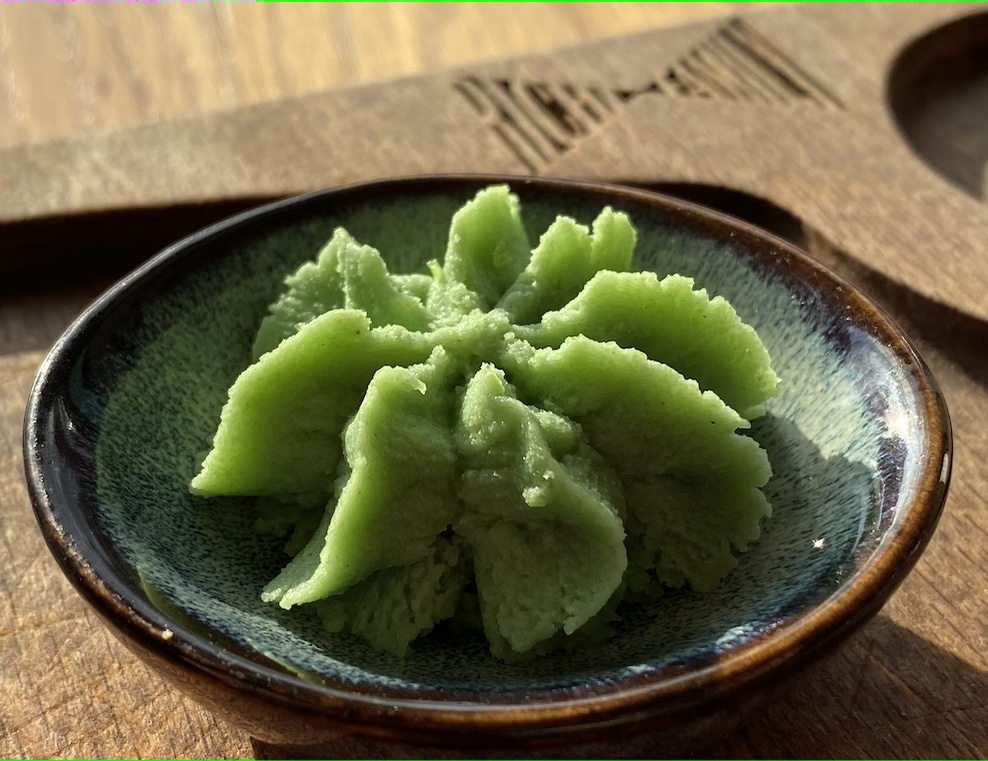

Заголовок звучит, как начало пошлого и по-глупому смешного анекдота от поддатого деда. Чем не повод почитать?))
Честно говоря, я не очень люблю горчицу, потому что она горькая, как ни странно, но ее цвет довольно симпатичный.
Цвет горчицы чем-то похож на мёд, да? Я же не одна так думаю? И даже семена, из которых, как оказалось, изготавливают горчицу, похожи на пчелиную пыльцу, что довольно мило) Горчицу же из семян делают? Надеюсь, что да, иначе зачем они на картинке?
Я думаю, что это просто зеленая горчица, да простят меня все любители васаби, но васаби с горчицей похожи даже по консистенции!!!
Вот, смотрите сами!
Ммм, ладно, возможно, горчица более густая...
И вот ответ на самый главный вопрос этого вечера, чем же горчица отличается от васаби? Ответ прост - я не знаю)) Пойду узнавать....
Нашла!
Этот один пунктик и является основным отличием васаби от горчицы. Но, к моему сожалению, пока я гуглила отличия этих двух продуктов, я наткнулась на продукт под названием "хрен". Признаюсь честно, всю жизнь думала, что горчица и хрен - одно и то же, но статьи из гугла активно меня в этом разубеждают. Придется и в этом разбираться, хотя и не особо хочется((
Коренья на имбирь похожи, ну и на ветки деревье, естественно.